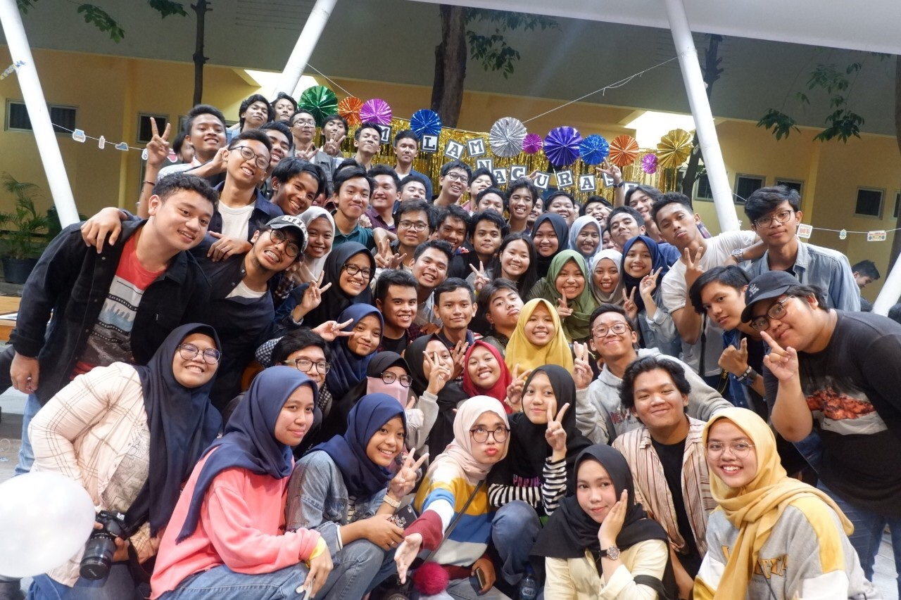

Ini aku rek hehe..

Haloo rek.. kenalin namaku Zahrin Nurshofia Wardhani, biasanya sih aku dipanggil zahrin atau shofi.. Aku lahir aslinya di Malang, tapi akte kelahiranku ditulis Ponorogo, jadi aku bingung kalau ditanya asli mana, aku mau jawab apa wkwkwk Aku hidup nomaden. Pindah-pindah. Tk ku pernah di Ponorogo, pernah juga di Medan. pokoknya Tk ku itu pindah-pindah terus, sampe akhirnya ga lulus-lulus :) Terus aku SD di Padang, di SD Islam Al-Azhar 32 Padang. Dan pas mau SMP, aku pindah ke Palembang, dan aku sekolah di SMP Negeri 09 Palembang. Terus aku masuk SMA di SMA Plus Negeri 17 Palembang. Tapi, pas kelas 11, aku pindah ke Surabaya, dan sekolah di SMA Negeri 15 Surabaya. Dan sekarang, aku lagi kuliah di Departemen Sistem Informasi ITS.. Salam kenal buat kalian semua yang liat profilku inii.. Aku sayang kalian muah..
Link-link bonus
Ini nih, Beberapa link penugasan PWEB-ku dan salah satu event seru yang pernah aku rasain...
Malam Inagurasi FTIK 2019
ini fotonya..
Kalian tau apa itu malam inagurasi? Jadi, inagurasi sendiri itu artinya seperti pengukuhan atau pelantikkan resmi atas diangkatnya suatu jabatan atau kedudukan. dan malam adalah waktu. jadi, malam inagurasi itu malam dimana adanya acara pengukuhan atau pelantikkan resmi atas diangkatnya suatu jabatan atau kedudukan, yang disini artinya, pengangkatan resmi untuk mahasiswa. Diacara itu, mulai dari konsep ide, dekorasi, konsumsi, dan sub acara apa saja yg ada, itu dilakuin sendiri oleh masasiswa FTIK. Dan alhamdulillah, semua nya berjalan dengan lancar. Seru banget.. banyak permainan-per mainan, ada nyanyi-nyanyi juga, ada nge DJ juga.. POKOKNYA SERU ABIS!! Ga nyesel udah dateng ke Malam Inagurasi FTIK 2019 waktu itu deh...
Class Meeting SMA
ini fotonya..

Kalo ini, ini adalah acara Classmeeting pertamaku setelah aku pindah ke Surabaya. Jujur, seru banget classmeetingnya.. Dan permainan-permainan yang ada di class meeting waktu itu bener-bener banyak dan ga ngebosenin!! Bahkan ada permainan tradisional Gobak Sodor!! Bener-bener bikin flashback ke masa kecil kita dulu ga sihh.. huuu Aku kangen sama masa-masa bareng kalian wahai teman kelasku dulu huu..
Buatan Zahrin ihiy..